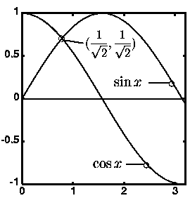

| Home |
| Gallery of examples |
| Online manual |
| Download iTe |
| What is new |
| Bug list |
| Version _ITEVERSION_ (_TODAY_) | |
| the Interactive Tex Editor | |
|
|
||||||||||
Description iTe is an easy to use, interactive authoring tool for LATEX and TEX documents. With iTe, it is possible to select arbitrary display fragments such as figures, equations, labels, captions, etc. These fragments can then be freely moved, rotated and scaled. Existing tools are either awkward to use (for example cryptic LATEX extensions), or they produce results of poor quality (font of captions does not match LATEX font, for example). To the user, iTe is an easy to use and effective tool which is a lot of fun.
 Example Using iTe, it took my then five year old daughter only a few minutes to typeset the simple example to the right.
How does it work The user actions (translation, scaling and rotation) are simultaneously recorded in the LATEX source file and displayed on the screen by an asynchronous ghostscript process. What you see on the screen is exactly what you get if the source is recompiled and printed.
How to use it Because iTe is written in Emacs-lisp, it integrates nicely in the editing process. Just call it during a normal (X)Emacs session as many times as you want. Note however, that iTe is not a WYSIWYG front end for LATEX, and iTe does not change the way you use LATEX to typeset 95% of your text. But it will help you to manage the remaining 5% fast with a high quality result.
Platform iTe should run on every Unix and MS Windows platform meeting the requirements.
(La)TeX related recources